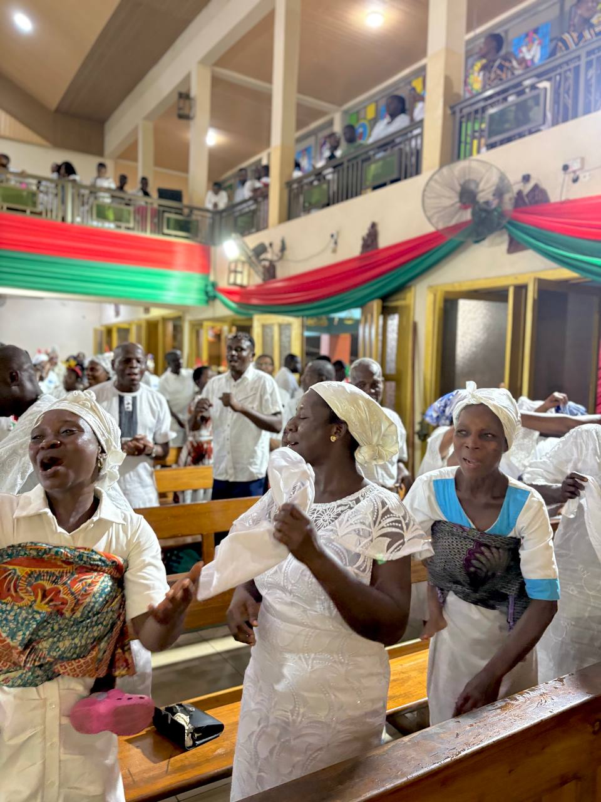
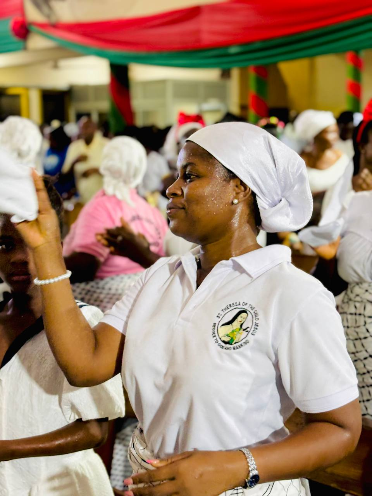
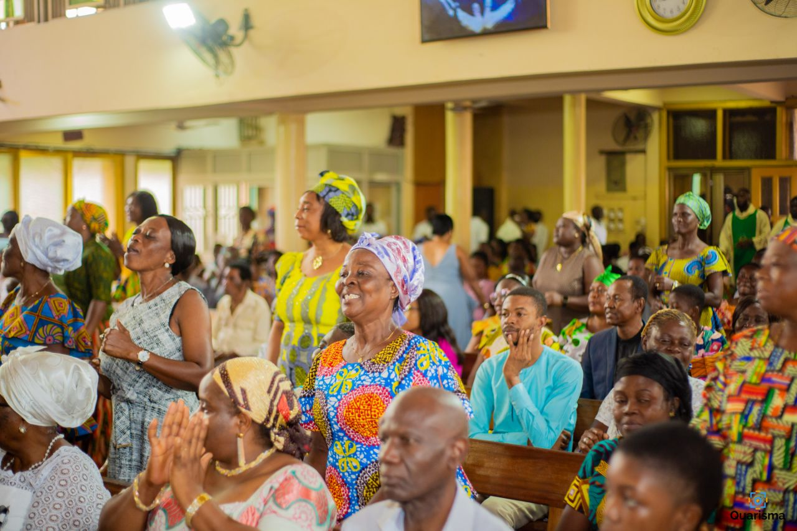
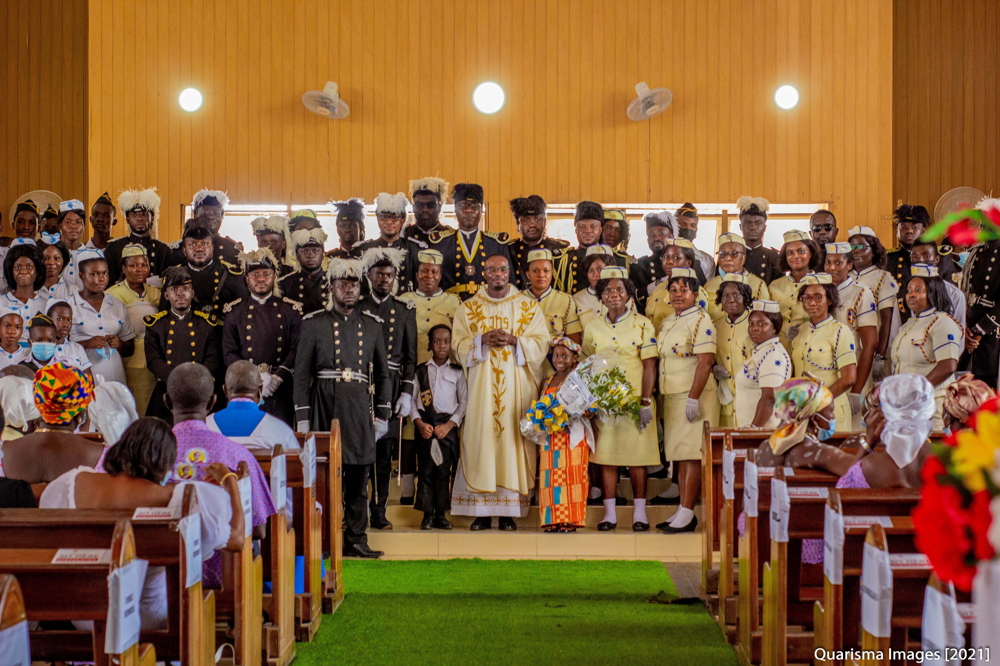
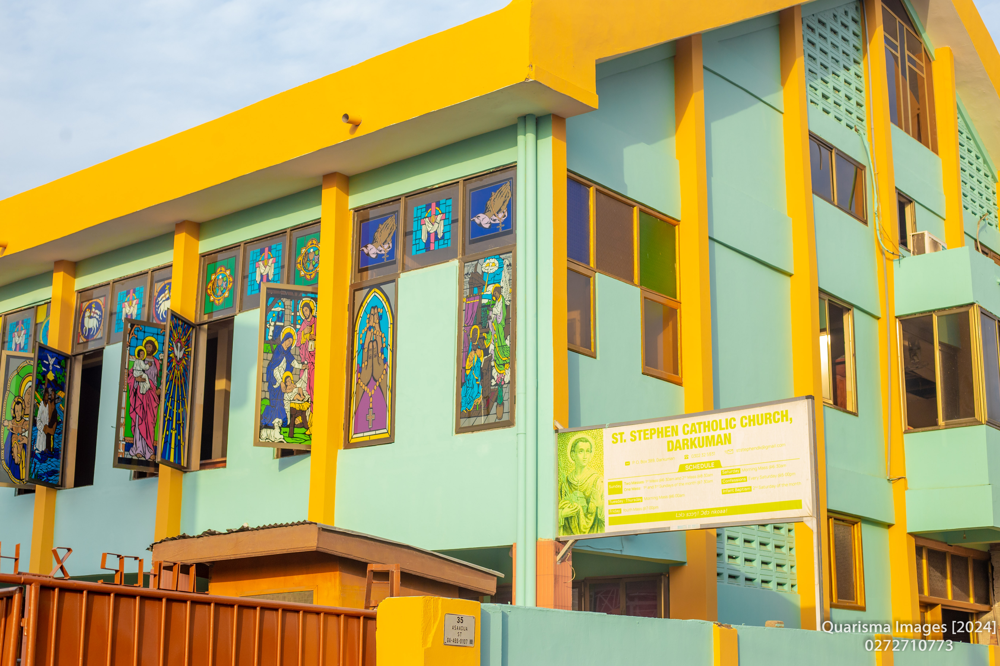
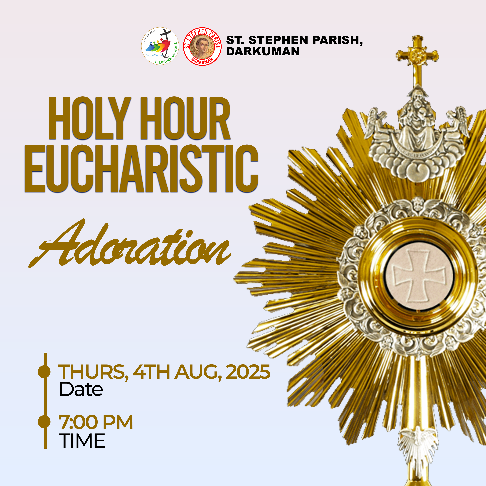

Our Ministries
St. Stephen Catholic Church offers various ministries to help you grow in faith and serve the community

St. Theresa of the Child Jesus
A society dedicated to following the spiritual path of St. Theresa, focusing on simple acts of love and devotion.
Learn More
Christian Mother Association
The CMA brings together mothers to support each other in faith and family life, promoting Christian values in the home.
Learn More
Catholic Men Confraternity
The CMC unites men in faith, fellowship, and service, encouraging spiritual growth and leadership within the parish and families.
Learn More
St. Michael Ewe Society
A cultural and spiritual group that celebrates Ewe traditions while fostering Catholic faith among Ewe-speaking parishioners.
Learn More
Knights & Ladies of St. John
A fraternal organization dedicated to charitable works, spiritual growth, and supporting the parish community.
Learn More
Akan Kuo
A cultural and spiritual group that celebrates Akan traditions while fostering Catholic faith among Akan-speaking parishioners.
Learn More
The Marshallan Association
A Catholic Friendly Society with the motto: Unity, Charity, Fraternity and Service, pledging loyalty to the Church.
Learn More
Christian Daughters Association
A group for young women focused on spiritual growth, virtue, and service in the parish community.
COSRA
Catholic Organization for Social and Religious Advancement provides opportunities for youth to grow in faith and engage in social outreach.
Learn More
Catholic Youth Organization
CYO provides spiritual, social, and service opportunities for young people to grow in faith and leadership.

Knights & Ladies of the Altar
KNOLTA trains and coordinates altar servers who assist the priest during Mass and other liturgical celebrations.
Learn More
League of Tarcisian's of the Sacred Heart
Named after St. Tarcisian, this group helps young people carry the knowledge and love of Jesus to others, especially their families.
Learn More
Catholic Students Union (CASU)
A vibrant youth group bringing Catholic students together for effective coordination of activities and holistic programmes.
Learn More
St. Stephen Choir
Our main parish choir enhances liturgical celebrations through music. All are welcome to join, regardless of musical experience.
Learn More
Marian Voices
A youth choir dedicated to praising God through song and enhancing our liturgical celebrations.
St. Cecilia Singing Band
Named after the patron saint of music, this group provides beautiful music for various parish celebrations.

Ushers
Ushers welcome parishioners and visitors, assist with seating, take up collections, and help maintain order during liturgical celebrations.
Lectors
Lectors proclaim the Word of God during Mass. Training is provided for those interested in this important ministry.

Legion of Mary
A group devoted to Mary that focuses on prayer, evangelization, and spiritual works of mercy in the parish and community.

Sacred Heart Confraternity
Dedicated to promoting devotion to the Sacred Heart of Jesus through prayer, adoration, and acts of reparation.

St. Anthony's Guild
A group dedicated to following the spiritual path of St. Anthony of Padua through service, prayer, and charitable works.
Learn More
Catholic Charismatic Renewal
A spiritual movement focused on experiencing the Holy Spirit through prayer, praise, and charismatic gifts.
Learn More
St. Vincent de Paul
This society provides direct assistance to those in need through food, clothing, financial aid, and other support services.
How to Join a Parish Group
We welcome all parishioners to participate in our parish groups and ministries. To join any of these groups or to learn more about them, please:
- Speak with the group coordinator after Mass
- Contact the parish office
- Fill out the membership interest form on our contact page